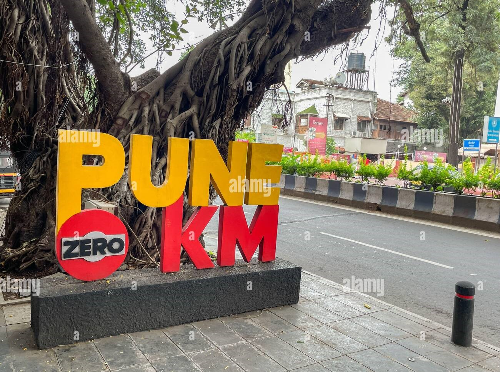

welcome to pune
places in pune
| sr no | place name | description | address | distance from station | click here to know more |
| 1 | shaniwar wada | famous peshwa wada | Shaniwar Peth, Pune | 3.5km | "click here" |
| 2 | aga khan palace | Aga Khan Palace is also a memorial dedicated to Mahatma Gandhi | Kalyani Nagar, Pune | 8km | "click here" |
| 3 | Rajiv Gandhi zoo logical park | Rajiv Gandhi Zoological Park is a well-known zoological park located in Katraj, Pune. It is one of the most visited zoos in Maharashtra and serves as a conservation and education center. | Rajiv Gandhi Zoological Park,Katraj, Pune | 17km | "click here" |
| 4 | sighgad fort | Sinhagad Fort has played a significant role in the Maratha Empire and witnessed several battles. | Sinhagad Fort, Thoptewadi, Pune, Maharashtra | 33km | "click here" |
01.Pune was formerly known as “Poona”
02.Pune is the second-largest city in Maharashtra.
03.The city is surrounded by picturesque hills.
04.Pune has a rich historical significance.
05.Pune is home to numerous educational institutions.
06.The city is a melting pot of diverse cultures.